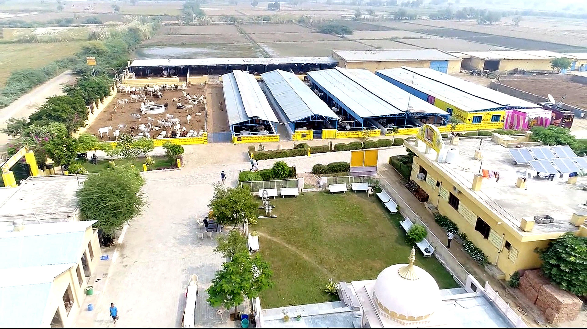

Samarpan Gaushala • Govardhan, Mathura
Spacious hygienic sheds, organic green pasture, and 24/7 medical infirmary for 600+ cows.
A Journey of Compassion Since 2009
Samarpan Gaushala was established in 2009 under the guidance and inspiration of Pujya Shri Sanjiv Krishna Thakur Ji with a vision to serve and protect Gau Mata.
What began as a commitment to Gau Seva has grown into a dedicated mission of providing care, nourishment, shelter and protection to hundreds of cows.
Today, Samarpan Gaushala provides care to over 600 cows, including abandoned, helpless and injured animals.

पूज्य श्री संजीव कृष्ण ठाकुर जी
Pujya Shri Sanjiv Krishna Thakur Ji
Under whose divine guidance and inspiration, Samarpan Gaushala was established in 2009. His profound spiritual vision transforms Gau Seva from a simple charitable deed into a living sacrament of selfless service and love for all living beings.